4. Tranformació del M. E/R al M. Relacional
A continuació veurem les regles de transformació de l'esquema en el Model E/R al Model Relacional.
D'aquesta manera continuem el procés de disseny d'una Base de Dades. En el Tema 2 hem après a fer l'esquema en el Model Entitat-Relació. Ara el traduirem al Model Relacional, i ja es podrà implementar en qualsevol SGBD Relacional. Faltaria només el procés de Normalització (tema 4) per acabar de deixar les taules perfectament dissenyades. De tota manera les Bases de Dades que dissenyem nosaltres, amb el procés descrit anteriorment, tindran unes taules molt "normalitzades", sempre que dissenyem bé.
4.1 Entitats
Tota entitat es transformarà en una taula, amb tots els seus atributs, que es consideraran com a simples. Es tria un (o un conjunt) com a clau principal, i el denotarem subratllant-lo. Les entitats dèbils les estudiarem millor més endavant.
En el nostre exemple, com teníem 4 entitats, ens eixiran de moment 4 taules:
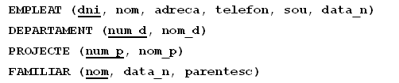
No considerarem els atributs multivaluats. Els tractarem i solucionarem en el tema següent, el de Normalització.
4.2 Relacions 1:N
Per cada relació 1:N entre les entitats A i B , on A és la que participa amb grau de cardinalitat 1, i B amb grau N, s'inclou un nou camp en B (del mateix tipus que la clau principal deA) que a més serà clau externa que apuntarà a A , més concretament a la clau principal de A. En moltes ocasions al camp nou de B se li posa el mateix nom que a la clau principal de A , però no és necessari, depén del gust de cadascú.
També s'inclouran en B tots els possibles atributs de la relació.
La següent animació intenta explicar-ho millor:
Si a més l'entitat que participa amb grau N ho fa de forma total (com en la
figura de baix), la clau externa no pot ser nula (és a dir sempre ha de
tenir un valor).
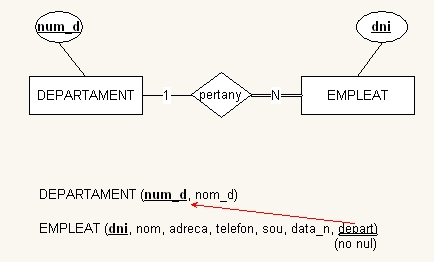
En l'exemple nostre:
-
Per la relació Pertany (figura de dalt) inclourem l'atribut departament a Empleat , que a més haurà de ser no nul.
-
Per la relació Controla inclourem l'atribut departament a Projecte (no nul).
-
Per la relació Supervisa inclourem l'atribut supervisor a Empleat (és reflexiva), però aquest sí que pot ser nul. Encara que semble estrany, un camp pot ser clau externa que apunta a la clau principal de la mateixa taula.
-
Per la relació Té entre empleat i familiar, inclourem en FAMILIAR l'atribut dni_e , però com que Familiar és dèbil la veurem millor un poc més endavant.
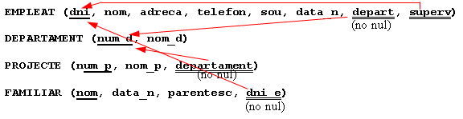
4.3 Relacions M:N
Per cada relació M:N construirem una nova taula on s'inclouran com a clau externa les claus principals de les dues entitats, i a més la seua combinació constituirà (o formarà part de) la clau principal. Inclourem també els possibles atributs de la relació.
En l'exemple:
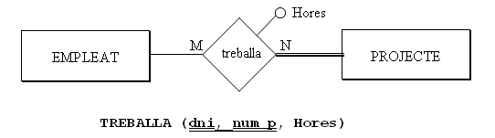
Cada vegada que ens trobem amb una relació M:N i la traduïm per una nova taula haurem depreguntar-nos si és suficient amb la clau principal formada per les dues claus externes, o si fa falta afegir un altre camp. Hem de ser conscients que la clau principal no puga repetir-se, que hi haja 2 files amb la mateixa clau principal. Així, en l'exemple, ens hauríem de fer la següent pregunta: pot un empleat treballar en el mateix projecte més d'una vegada? En aquest cas la contestació és negativa, i per tant és suficient amb aquesta clau principal.
Però suposem que la resposta és que sí que pot treballar més d'una vegada al llarg del temps. En aquest cas seria una espècie d'històric, on faria falta, a més, saber quan comença i quan acaba de treballar en un projecte un determinat treballador (serien atributs de la relació):
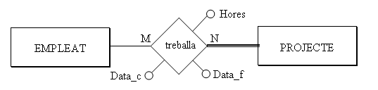
Aleshores, com no és suficient amb la clau principal formada per les dues claus externes, inclourem un altre camp en la clau principal. Sembla que el més adequat seria Data_c (ja no es pot donar el cas que el mateix treballador treballe més d'una vegada en el mateix projecte, començant el mateix dia)
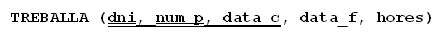
Però per una altra banda, les claus principals molt llargues no són operatives, i encara que la traducció literal siga com hem dit, per motius pràctics podem canviar la clau principal. Considerarem que el nombre màxim de camps en la clau principal és de 3. 4 ja són massa, i aleshores buscarem una altra clau principal (un codi de treball, per exemple). Les claus externes continuarien sent-ho.
4.4 Relacions 1:1
No hi ha una forma única de traduir aquestes relacions. Tres seran les possibles traduccions, segons la participació total o parcial de les entitats en la relació, i també segons el que ens diga el "sentit comú".
- Si de les dues entitats que entren la relació, A i B, una d'elles i només una, participa de forma total, per exemple B , traduirem la relació 1:1 com una clau externa en la taula corresponent a l'entitat que participa de forma total (B). Podem obligar també a que aquest camp que serà clau externa siga no nul (ja que totes les ocurrències de B entren en la relació). També podem fer que aquest camp siga únic (no es podrà repetir, ja que si es puguera repetir seria una relació 1:N). A més, inclourem en B tots els possibles atributs de la relació.
Per exemple, la relació dirigeix , que és 1:1 entre EMPLEAT i DEPARTAMENT :
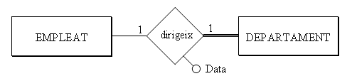
Com que l'entitat de la dreta participa de forma total, triarem DEPARTAMENT :
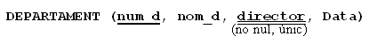
Ho fem d'aquesta manera perquè tots els departaments tenen director, però no tots els empleats són directors. Si posàrem la clau externa en la taula EMPLEAT(s'anomenaria per exemple dep_que_dirigeix) moltes vegades estaria buit, ja que relativament són pocs els empleats que dirigeixen un departament.
Vegem un altre exemple de relació 1:1, el de les papallones. Teníem una relació 1:1 entre PERSONA i COL·LECCIÓ
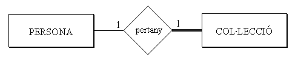
Triaríem COL·LECCIÓ , ja que entra de forma plena o total en la relació.
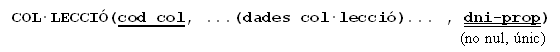
- Si les dues entitats participen de forma total, es pot considerar tot (les dues entitats i la relació, amb els seus possibles atributs) com una sola taula. En la pràctica això serà prou estrany, perquè ja ho hauríem considerat una sola entitat. Per exemple, considerem que totes les persones que estudiem tenen una col·lecció:
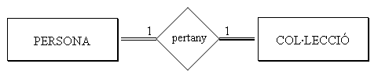
Aleshores podríem considerar una única taula, que continga les dades de la persona i de la seua col·lecció:
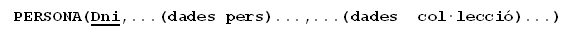
De tota manera, pot ser ens interesse (per separar clarament els dos tipus d'informació) dues taules. Aleshores podríem traduir-lo com en el primer punt, amb una clau externa (no nula) en una de les dues taules, i hauríem de triar la taula que menys s'utilitze.
- Si les dues entitats participen de forma parcial, com que si posem una clau externa en una de les dues, moltes vegades tindrà valor nul, podem traduir-la com una nova taula que marque la relació, on hi haurà una tupla per cada relació entre dues ocurrències. Inclouríem en la nova taula els possibles atributs de la relació.
En l'exemple podria ser que les col·leccions pertanyen a una persona particular o a una institució (no tenen propietari):
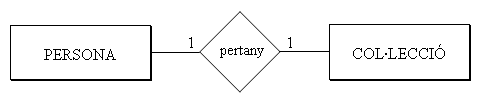
Quedaria:
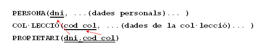
Però com comentàvem al principi, haurem d'aplicar el sentit comú, ja que potser una de les dues podria participar de forma "quasi" total (per exemple, quasi totes les col·leccions són d'una persona). Aleshores podria ser millor traduir-lo com en el primer cas, posant la clau externa en la que participa de forma "quasi" total, ja que aquesta tindrà relativament pocs valors nuls, i seria més costós mantenir una altra taula. Evidentment la clau externa sí que podria ser nula, en aquest cas.
Resumint, una relació 1:1 quasi sempre la traduirem com una clau externa en la taula que participa en la relació de forma total o quasi total (o la que previsiblement té més ocurrències en la relació)
4.5 Entitats dèbils
Les entitats dèbils, com que com a mínim depenen d'una altra, podrem ser més restrictius que les altres. Una entitat sempre és dèbil a través, com a mínim, d'una relació que la comunica amb l'entitat principal. A més participa de forma total (com que no pot existir sense l'altra, tota ocurrència està en la relació).
Per tant, tota entitat dèbil tindrà una clau externa, que apunta a la principal i serà no nula. Però encara podem anar més enllà:
-
Dependència en existència : farem que la clau externa esborre i actualitze en cascada , ja que si deixa d'existir la principal no té sentit la dèbil.
-
Dependència en identificació : a més d'esborrar i actualitzar en cascada, la clau externa formarà part de la clau principal.
Si la relació per la qual depèn en identificació és 1:N, farà falta un altre camp en la clau principal.
Si és 1:1, amb la clau externa és suficient com a clau principal
En nostre exemple quedarà així:
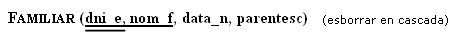
4.6 Resum dependències
Anem a fer un quadre resum amb distints graus de dependència entre dues relacions i com es traduiria al Model Relacional:
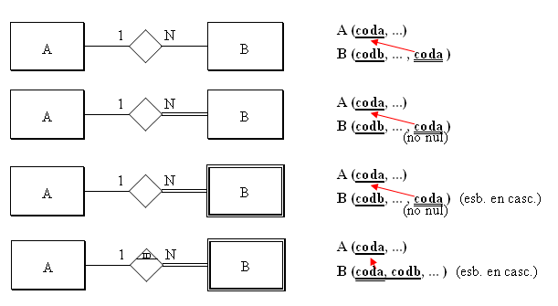
Per una altra banda, si ens trobem una entitat dèbil que depèn en identificació a través d'una relació 1:1, és suficient amb la clau principal de A com a clau principal de B
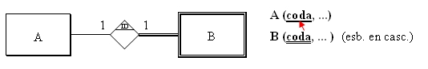
Una altra qüestió que pot dur a confusió és el cas de les claus externes formades per 2 camps. Ens basarem en l'exemple de sempre, en la taula FAMILIAR, ja que té una clau principal formada per 2 camps. Suposem que hi ha en el Model Entitat-Relació una taula que depèn d'ella, com podria ser comunicacions que se li han fet (cartes). Les entitats i la relació entre elles podria ser aquesta:
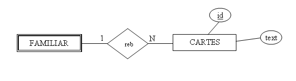
Com que la relació és de tipus 1:N la traduirem per una clau externa en CARTES. I quina serà la clau externa? Com que la taula FAMILIAR té una clau principal formada per 2 camps, haurem de posar una clau externa formada per 2 camps. Alerta! no seran 2 claus externes, sinó una clau externa formada per 2 camps. Com sempre, representarem la clau externa amb un doble subratllat, que ara agafarà als 2 camps.
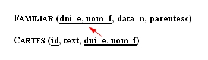
4.7 Relacions ternàries
En una relació ternària o superior construirem una nova taula, on inclourem com a claus externes les claus primàries de totes les entitats, i a més els atributs de la relació.
Habitualment, la clau principal de la nova taula serà la combinació de totes les claus principals de les entitats. Ocasionalment, si alguna entitat participa amb cardinalitat 1, la clau principal d'aquesta entitat no entraria a formar part de la clau principal de la nova taula.
Igual que en el cas de les relacions M:N, ens haurem de preguntar si és suficient amb la clau primària generada o si s'haurà d'incloure algun altre camp.
En l'exemple que vam posar de relació ternària, suposant els atributs de la relació la data de compra i la quantitat:
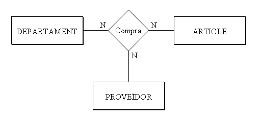
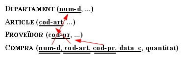
On hem posat totes les claus externes formant part de la clau principal, ja que totes entren amb cardinalitat N. Però no teníem prou amb aquesta clau principal, ja que el mateix departament pot comprar el mateix article al mateix proveïdor més d'una vegada. Com no teníem prou, hem posat un altre camp.
Seria moment, segurament, de substituir la clau principal que està formada per 4 camps, ja que en són massa.
Posaríem una altra clau principal, però les claus externes continuarien sent- ho, i a més serien no nules:
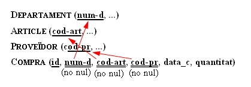
4.8 Especialitzacions
Aquest aspecte, com en el cas de les relacions 1:1, també té múltiples solucions. El problema de les especialitzacions és que, encara que de forma teòrica la solució siga correcta, en la pràctica suposa moltes taules i amb un cert grau de manteniment entre elles. Per tant, i aplicant el sentit comú, moltes vegades es fa una simplificació, llevant bé les subclasses, bé la superclasse, com veurem a continuació. Aquestes són les possibilitats:
- Transformar les especialitzacions en taules amb la clau principal heretada i els atributs específics (com si substituírem l'especialització en relacions 1:1, amb les subclasses depenent en identificació de la superclasse). Estaria també bé afegir un atribut a la superclasse per a poder saber de quin tipus és. En l'exemple ens quedaria:
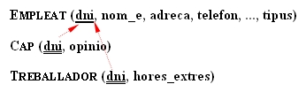
- Simplificar les subclasses. Aleshores tots els atributs d'aquestes haurien de passar a la superclasse. També s'haurien de passar totes les relacions que afecten a les subclasses, "retocant" les participacions totals (que ara ja no ho serien). Ara serà obligatori tenir el camp que distingeix el tipus (sinó, perdríem aquesta informació).
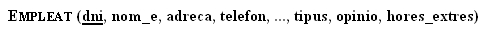
- Simplificar la superclasse. Aleshores tots els atributs d'aquesta passarien a cadascuna de les subclasses. També passarien les relacions a cadascuna d'aquestes, "retocant" les participacions totals.
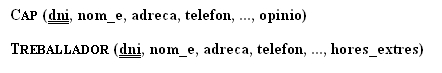
4.9 Restriccions externes
Ja hem comentat que restriccions externes són restriccions que no es poden expressar per mig del model de dades. Aleshores les expressarem de paraula.
Normalment, les restriccions externes del Model E/R continuaran sent-ho en el Model Relacional, perquè tampoc es podran expressar. En el nostre exemple teníem les restriccions externes del Model E/R:
Rex1 : El cap d'un departament ha de ser membre d'aquest.
Rex2 : Un empleat només pot treballar en projectes coordinats pel seu departament.
Açò tampoc es pot expressar amb el Model Relacional, per tant les mantindrem.
A banda, es poden crear més restriccions externes, perquè amb el Model Relacional no es pot expressar tot el que es podia expressar amb el Model E/R. Per exemple, en la relació:
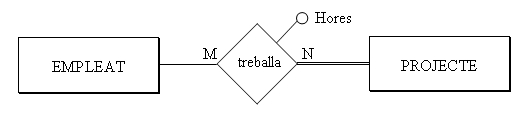
ja hem comentat que donarà lloc, a banda de les taules de les entitats, a una altra taula:
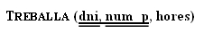
on dni i num_p són claus externes. Però l'entitat projecte participa de forma total en la relació, és a dir, en tot projecte ha d'haver un empleat treballant. ¿Com ho controlem això? Doncs és una nova restricció externa que la podríem formular així:
RexR3 : Tot projecte ha de tenir com a mínim un empleat treballant-hi.
Les participacions totals que ens suposaran una restricció externa són:
-
En una relació 1:N , una participació total de l'entitat que participa amb grau 1.
-
En una relació M:N , qualsevol participació total (si les dues participen de forma total, aleshores hi haurà dues restriccions externes).
-
En una relació 1:1 , depèn de la manera de traduir-se.
La manera d'implementar les restriccions externes serà per mig d'un TRIGGER, que s'active quan hi haja una actualització (inserció, modificació o esborrat) que afecte a la restricció externa. Per exemple, en la restricció RexR3 els moments importants són després d'inserir un nou projecte, i abans d'eliminar o modificar en la taula Treballa (per si un projecte es queda sense gent treballant en ell).
Les accions a desenvolupar podrien ser traure un avís, o obligar a inserir com a mínim una tupla en la taula Treballa , en el cas de la inserció d'un nou projecte; en el cas de modificació o eliminació en Treballa podria impedir-se aquesta actualització.
En el nostre exemple tindrem les restriccions externes al Model Relacional:
RexR1 : El cap d'un departament ha de ser membre d'aquest.
RexR2 : Un empleat només pot treballar en projectes coordinats pel seu departament.
RexR3 : Tot projecte ha de tenir com a mínim un empleat treballant-hi.
4.10 Exemple
Anem a veure com quedarà definitivament la traducció de l'exemple que estem arrastrant des del Tema 2. Donarem 2 versions, tenint en compte o no l'especialització de que el treballador pot ser cap o treballador normal.
Sense tenir en compte l'especialització tindrem aquesta solució:
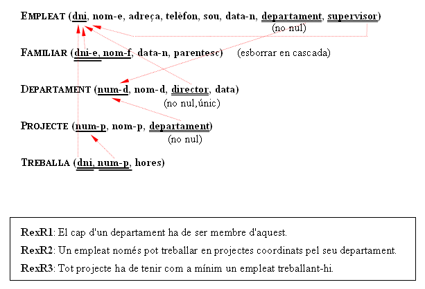
aquest vídeo explica tot el procés pas a pas:
I aquesta seria la forma alternativa de representar-lo:
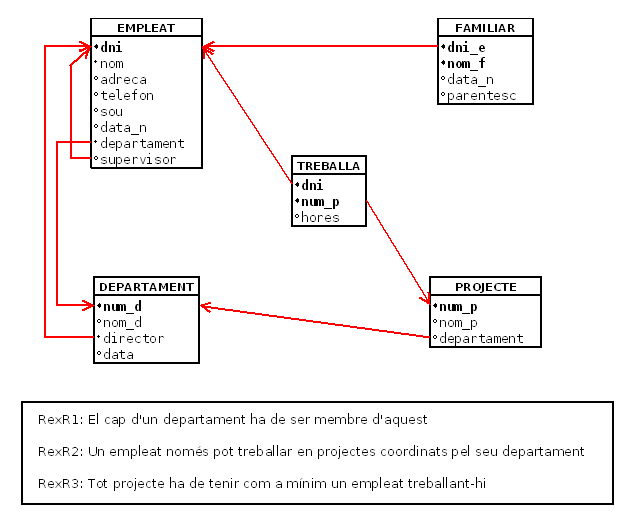
I tenint en compte l'especialització:
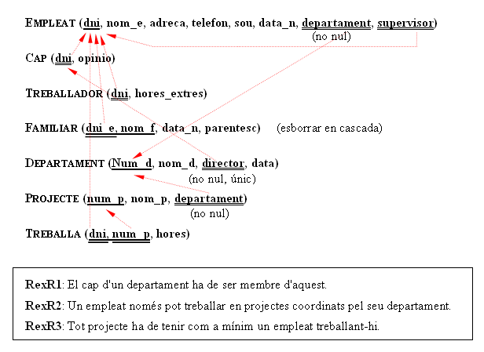
que aquest vídeo explica en els punts diferents a l'anterior solució
I ací tindríem la representació alternativa:
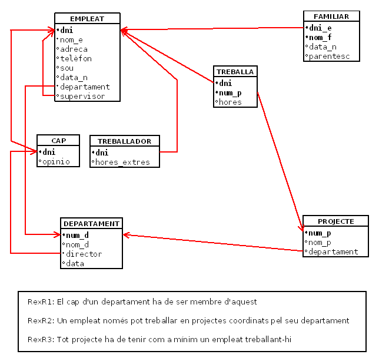
Llicenciat sota la Llicència Creative Commons Reconeixement NoComercial CompartirIgual 3.0